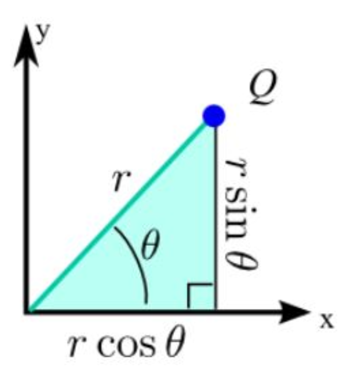
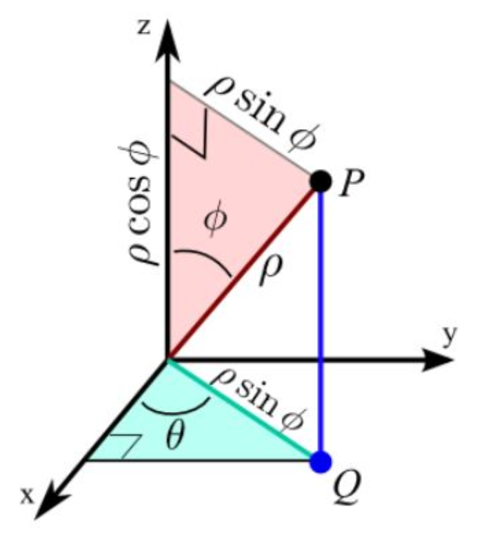

W14. Polar Coordinates, Spherical Coordinates, Conic Sections
1. Summary
1.1 Polar Coordinates
Polar coordinates provide an alternative way to describe points in a plane using a distance and an angle, rather than horizontal and vertical displacements. While Cartesian coordinates use \((x, y)\) to specify a point’s location, polar coordinates use \((r, \theta)\) where \(r\) is the distance from the origin (called the pole) and \(\theta\) is the angle measured counterclockwise from the positive \(x\)-axis (called the polar axis).

Think of polar coordinates as giving directions: “Walk 5 meters at a 30-degree angle northeast from here.” This is often more natural than saying “Walk 4.33 meters east and 2.5 meters north.”
1.1.1 Conversion Between Coordinate Systems
To convert between Cartesian and polar coordinates, we use the following relationships:
From Polar to Cartesian:
\[ x = r \cos \theta \] \[ y = r \sin \theta \]
These formulas come from basic trigonometry: if you draw a right triangle with hypotenuse \(r\) at angle \(\theta\), the horizontal leg is \(r \cos \theta\) and the vertical leg is \(r \sin \theta\).
From Cartesian to Polar:
\[ r = \sqrt{x^2 + y^2} \] \[ \tan \theta = \frac{y}{x} \]
The first formula uses the Pythagorean theorem, and the second uses the definition of tangent. However, when finding \(\theta\), you must consider which quadrant the point is in to get the correct angle.
1.1.2 Converting Equations
To convert a Cartesian equation to polar form, substitute \(x = r \cos \theta\) and \(y = r \sin \theta\) and simplify. The goal is an equation with only \(r\) and \(\theta\) as variables.
For example:
- The vertical line \(x = 5\) becomes \(r \cos \theta = 5\), or \(r = 5 \sec \theta\)
- The circle \(x^2 + y^2 = 16\) becomes \(r^2 = 16\), or simply \(r = 4\)
- The line \(y = x\) becomes \(r \sin \theta = r \cos \theta\), which simplifies to \(\tan \theta = 1\), giving \(\theta = \frac{\pi}{4}\)
Some equations become much simpler in polar form (like circles centered at the origin), while others become more complex.
1.2 Spherical Coordinates
Just as polar coordinates extend Cartesian coordinates in 2D, spherical coordinates extend them to 3D space. While 3D Cartesian coordinates use \((x, y, z)\), spherical coordinates use \((\rho, \theta, \varphi)\) where:
- \(\rho\) (rho) is the distance from the origin to the point
- \(\theta\) (theta) is the azimuthal angle in the \(xy\)-plane from the positive \(x\)-axis (same as in 2D polar)
- \(\varphi\) (phi) is the polar angle measured down from the positive \(z\)-axis

Spherical coordinates are particularly useful when dealing with problems that have spherical symmetry, such as gravitational fields around planets, sound waves radiating from a point source, or navigation using latitude and longitude.
1.2.1 Conversion Formulas for Spherical Coordinates
From Spherical to Cartesian:
\[ x = \rho \sin \varphi \cos \theta \] \[ y = \rho \sin \varphi \sin \theta \] \[ z = \rho \cos \varphi \]
These formulas capture the 3D geometry: \(\rho \sin \varphi\) gives the radius of the circle in the \(xy\)-plane, which is then split into \(x\) and \(y\) components using \(\cos \theta\) and \(\sin \theta\).
From Cartesian to Spherical:
\[ \rho = \sqrt{x^2 + y^2 + z^2} \] \[ \theta = \arctan\left(\frac{y}{x}\right) \quad \text{(mind the quadrant)} \] \[ \varphi = \arccos\left(\frac{z}{\rho}\right) \]
Standard ranges are: \(\rho \geq 0\), \(0 \leq \theta < 2\pi\), and \(0 \leq \varphi \leq \pi\).
1.3 Conic Sections
Conic sections are curves obtained by intersecting a plane with a double cone. These include circles, ellipses, parabolas, and hyperbolas. They appear throughout mathematics, physics, and engineering—from planetary orbits to satellite dishes to architectural arches.
1.3.1 Focus-Directrix Definition
All conic sections (except circles) can be defined using a unified approach: A conic section is the set of all points \(P\) such that the ratio of:
\[\frac{\text{Distance from } P \text{ to a fixed point (focus)}}{\text{Distance from } P \text{ to a fixed line (directrix)}} = e\]
where \(e\) is called the eccentricity. This single parameter determines the type of conic:
- \(e = 0\): Circle (special case where focus and center coincide)
- \(0 < e < 1\): Ellipse (including circles)
- \(e = 1\): Parabola
- \(e > 1\): Hyperbola
The eccentricity measures how “stretched” the conic is. A circle has perfect symmetry (\(e = 0\)), while a parabola is the boundary case (\(e = 1\)), and hyperbolas are “open” curves (\(e > 1\)).
1.3.2 Ellipses
An ellipse is a closed curve where the sum of distances from any point on the curve to two fixed points (called foci) is constant. In standard form centered at the origin with horizontal major axis:
\[\frac{x^2}{a^2} + \frac{y^2}{b^2} = 1 \quad (a > b > 0)\]
For this ellipse:
- Semi-major axis: \(a\) (half the longest diameter)
- Semi-minor axis: \(b\) (half the shortest diameter)
- Eccentricity: \(e = \sqrt{1 - \frac{b^2}{a^2}}\)
- Foci: Located at \((\pm ae, 0) = (\pm c, 0)\) where \(c = ae = \sqrt{a^2 - b^2}\)
- Directrices: Vertical lines at \(x = \pm \frac{a}{e}\)
The closer \(b\) is to \(a\), the more circular the ellipse (smaller \(e\)). If \(b = a\), we have a perfect circle with \(e = 0\).
1.3.3 Hyperbolas
A hyperbola consists of two separate branches where the difference of distances from any point on the curve to two foci is constant. In standard form with horizontal transverse axis:
\[\frac{x^2}{a^2} - \frac{y^2}{b^2} = 1\]
For this hyperbola:
- Vertices: Located at \((\pm a, 0)\)
- Eccentricity: \(e = \sqrt{1 + \frac{b^2}{a^2}} > 1\)
- Foci: Located at \((\pm ae, 0) = (\pm c, 0)\) where \(c = ae = \sqrt{a^2 + b^2}\)
- Directrices: Vertical lines at \(x = \pm \frac{a}{e}\)
- Asymptotes: Lines \(y = \pm \frac{b}{a}x\) that the branches approach
Note that for hyperbolas, \(c^2 = a^2 + b^2\) (with a plus sign), unlike ellipses where \(c^2 = a^2 - b^2\) (with a minus sign).
1.3.4 Parabolas
A parabola is the set of points equidistant from a focus and a directrix. For a parabola opening to the right:
\[y^2 = 4px \quad (p > 0)\]
Properties:
- Focus: Located at \((p, 0)\)
- Directrix: Vertical line \(x = -p\)
- Eccentricity: \(e = 1\) (always)
- Vertex: At the origin \((0, 0)\)
The parameter \(p\) is the distance from the vertex to the focus (and also from the vertex to the directrix).
1.4 Conic Sections in Polar Form
When a conic section has one focus at the origin, it can be expressed elegantly in polar coordinates. This form is especially useful in astronomy and physics.
1.4.1 General Polar Equation
The general polar form for a conic with focus at the origin is:
\[r = \frac{ed}{1 \pm e \cos \theta} \quad \text{(vertical directrix)}\]
or
\[r = \frac{ed}{1 \pm e \sin \theta} \quad \text{(horizontal directrix)}\]
where: - \(e\) is the eccentricity - \(d\) is the perpendicular distance from the focus to the directrix - The sign determines whether the directrix is to the right/above (+) or left/below (-) of the focus
1.4.2 Converting Between Forms
Cartesian to Polar: To convert an ellipse or hyperbola in standard Cartesian form to polar form:
- Identify the parameters \(a\), \(b\), and calculate \(e\)
- Find a focus location and shift coordinates so the focus is at the origin
- Determine \(d\) (distance from focus to directrix)
- Apply the general polar formula with appropriate sign
Polar to Cartesian: To convert from polar to Cartesian:
- Multiply both sides by the denominator
- Substitute \(x = r \cos \theta\), \(y = r \sin \theta\), and \(r = \sqrt{x^2 + y^2}\)
- Isolate any square root terms
- Square both sides (if necessary)
- Rearrange and complete the square to get standard form
2. Definitions
- Polar Coordinates: A coordinate system that represents a point in the plane by \((r, \theta)\), where \(r\) is the distance from the origin and \(\theta\) is the angle from the positive \(x\)-axis.
- Pole: The origin in the polar coordinate system.
- Polar Axis: The positive \(x\)-axis in the polar coordinate system, from which angles are measured.
- Spherical Coordinates: A 3D coordinate system that represents a point as \((\rho, \theta, \varphi)\), where \(\rho\) is the distance from the origin, \(\theta\) is the azimuthal angle in the \(xy\)-plane, and \(\varphi\) is the polar angle from the positive \(z\)-axis.
- Conic Section: A curve obtained by intersecting a plane with a double cone, including circles, ellipses, parabolas, and hyperbolas.
- Eccentricity: A parameter \(e\) that determines the type of conic section: \(e = 0\) for circles, \(0 < e < 1\) for ellipses, \(e = 1\) for parabolas, and \(e > 1\) for hyperbolas.
- Focus (Foci): A fixed point (or points) used in the geometric definition of a conic section.
- Directrix: A fixed line used in the focus-directrix definition of a conic section.
- Ellipse: A conic section with eccentricity \(0 < e < 1\), appearing as a closed oval curve where the sum of distances from any point to two foci is constant.
- Hyperbola: A conic section with eccentricity \(e > 1\), consisting of two separate branches where the difference of distances from any point to two foci is constant.
- Parabola: A conic section with eccentricity \(e = 1\), where every point is equidistant from a focus and a directrix.
- Semi-major Axis: For an ellipse, half the length of the longest diameter, denoted \(a\).
- Semi-minor Axis: For an ellipse, half the length of the shortest diameter, denoted \(b\).
- Vertex (Vertices): The points where a conic section intersects its axis of symmetry.
- Asymptotes: Lines that a hyperbola’s branches approach but never touch.
3. Formulas
- Polar to Cartesian Conversion: \(x = r \cos \theta\), \(y = r \sin \theta\)
- Cartesian to Polar Conversion: \(r = \sqrt{x^2 + y^2}\), \(\tan \theta = \frac{y}{x}\)
- Spherical to Cartesian Conversion: \(x = \rho \sin \varphi \cos \theta\), \(y = \rho \sin \varphi \sin \theta\), \(z = \rho \cos \varphi\)
- Cartesian to Spherical Conversion: \(\rho = \sqrt{x^2 + y^2 + z^2}\), \(\theta = \arctan\left(\frac{y}{x}\right)\), \(\varphi = \arccos\left(\frac{z}{\rho}\right)\)
- Ellipse Eccentricity: \(e = \sqrt{1 - \frac{b^2}{a^2}} = \frac{c}{a}\) where \(c = \sqrt{a^2 - b^2}\)
- Hyperbola Eccentricity: \(e = \sqrt{1 + \frac{b^2}{a^2}} = \frac{c}{a}\) where \(c = \sqrt{a^2 + b^2}\)
- Ellipse Standard Form: \(\frac{x^2}{a^2} + \frac{y^2}{b^2} = 1\) (horizontal major axis, \(a > b\))
- Hyperbola Standard Form: \(\frac{x^2}{a^2} - \frac{y^2}{b^2} = 1\) (horizontal transverse axis)
- Parabola Standard Forms: \(y^2 = 4px\) (right-opening), \(x^2 = 4py\) (upward-opening)
- Ellipse Foci: \((\pm ae, 0) = (\pm c, 0)\) for horizontal major axis
- Ellipse Directrices: \(x = \pm \frac{a}{e}\) for horizontal major axis
- Hyperbola Foci: \((\pm ae, 0) = (\pm c, 0)\) for horizontal transverse axis
- Hyperbola Directrices: \(x = \pm \frac{a}{e}\) for horizontal transverse axis
- Hyperbola Asymptotes: \(y = \pm \frac{b}{a}x\) for standard form \(\frac{x^2}{a^2} - \frac{y^2}{b^2} = 1\)
- Parabola Focus: \((p, 0)\) for \(y^2 = 4px\)
- Parabola Directrix: \(x = -p\) for \(y^2 = 4px\)
- Conic in Polar Form (Vertical Directrix): \(r = \frac{ed}{1 \pm e \cos \theta}\)
- Conic in Polar Form (Horizontal Directrix): \(r = \frac{ed}{1 \pm e \sin \theta}\)
- Line Through Two Points in Polar: \(r[r_2 \sin(\theta - \theta_2) - r_1 \sin(\theta - \theta_1)] = r_1 r_2 \sin(\theta_2 - \theta_1)\)
- Line Through Two Points in Polar (Alternative): \(\frac{1}{r} \sin(\theta_2 - \theta_1) = \frac{1}{r_2} \sin(\theta - \theta_1) - \frac{1}{r_1} \sin(\theta - \theta_2)\)
4. Examples
4.1. Convert \(x = 5\) to Polar Form (Lab 12, Problem 1)
Convert the Cartesian equation \(x = 5\) into polar form. Simplify your answer as much as possible.
Click to see the solution
Key Concept: Substitute \(x = r \cos \theta\) and simplify.
Substitute the conversion formula: \[x = 5 \implies r \cos \theta = 5\]
Solve for \(r\): \[r = \frac{5}{\cos \theta} = 5 \sec \theta\]
Answer: \(r = 5 \sec \theta\)
4.2. Convert \(y = -3\) to Polar Form (Lab 12, Problem 2)
Convert the Cartesian equation \(y = -3\) into polar form.
Click to see the solution
Substitute the conversion formula: \[y = -3 \implies r \sin \theta = -3\]
Solve for \(r\): \[r = \frac{-3}{\sin \theta} = -3 \csc \theta\]
Answer: \(r = -3 \csc \theta\)
4.3. Convert \(y = x\) to Polar Form (Lab 12, Problem 3)
Convert the Cartesian equation \(y = x\) into polar form.
Click to see the solution
Substitute the conversion formulas: \[y = x \implies r \sin \theta = r \cos \theta\]
Divide both sides by \(r \cos \theta\) (assuming \(r \neq 0\)): \[\frac{\sin \theta}{\cos \theta} = 1\] \[\tan \theta = 1\]
Solve for \(\theta\): \[\theta = \frac{\pi}{4} \text{ or } \theta = \frac{5\pi}{4}\]
Answer: \(\theta = \frac{\pi}{4}\) or \(\theta = \frac{5\pi}{4}\) (These represent the same line through the origin)
4.4. Convert \(y = 7x\) to Polar Form (Lab 12, Problem 4)
Convert the Cartesian equation \(y = 7x\) into polar form.
Click to see the solution
Substitute the conversion formulas: \[y = 7x \implies r \sin \theta = 7r \cos \theta\]
Divide by \(r \cos \theta\): \[\tan \theta = 7\]
Solve for \(\theta\): \[\theta = \arctan(7)\]
Answer: \(\theta = \arctan(7)\) (plus \(\pi\) for the opposite direction)
4.5. Convert \(x^2 + y^2 = 16\) to Polar Form (Lab 12, Problem 5)
Convert the Cartesian equation \(x^2 + y^2 = 16\) into polar form.
Click to see the solution
Key Concept: Use the identity \(r^2 = x^2 + y^2\).
Apply the identity: \[x^2 + y^2 = 16 \implies r^2 = 16\]
Take the positive square root: \[r = 4\]
Answer: \(r = 4\) (This represents a circle of radius 4 centered at the origin)
4.6. Convert \(x^2 + y^2 = 2x\) to Polar Form (Lab 12, Problem 6)
Convert the Cartesian equation \(x^2 + y^2 = 2x\) into polar form.
Click to see the solution
Substitute conversion formulas: \[x^2 + y^2 = 2x \implies r^2 = 2r \cos \theta\]
Rearrange: \[r^2 - 2r \cos \theta = 0\] \[r(r - 2 \cos \theta) = 0\]
Solve (excluding \(r = 0\)): \[r = 2 \cos \theta\]
Answer: \(r = 2 \cos \theta\) (This represents a circle)
4.7. Convert \(x^2 + y^2 = 9y\) to Polar Form (Lab 12, Problem 7)
Convert the Cartesian equation \(x^2 + y^2 = 9y\) into polar form.
Click to see the solution
Substitute conversion formulas: \[x^2 + y^2 = 9y \implies r^2 = 9r \sin \theta\]
Rearrange: \[r^2 - 9r \sin \theta = 0\] \[r(r - 9 \sin \theta) = 0\]
Solve (excluding \(r = 0\)): \[r = 9 \sin \theta\]
Answer: \(r = 9 \sin \theta\)
4.8. Convert \(xy = 1\) to Polar Form (Lab 12, Problem 8)
Convert the Cartesian equation \(xy = 1\) into polar form.
Click to see the solution
Substitute conversion formulas: \[xy = 1 \implies (r \cos \theta)(r \sin \theta) = 1\] \[r^2 \cos \theta \sin \theta = 1\]
Use the double angle identity \(\sin 2\theta = 2\sin \theta \cos \theta\): \[\frac{r^2 \sin 2\theta}{2} = 1\] \[r^2 \sin 2\theta = 2\]
Solve for \(r^2\): \[r^2 = \frac{2}{\sin 2\theta} = 2 \csc 2\theta\]
Answer: \(r^2 = 2 \csc 2\theta\)
4.9. Convert \(y = x^2\) to Polar Form (Lab 12, Problem 9)
Convert the Cartesian equation \(y = x^2\) into polar form.
Click to see the solution
Substitute conversion formulas: \[y = x^2 \implies r \sin \theta = (r \cos \theta)^2\] \[r \sin \theta = r^2 \cos^2 \theta\]
Divide by \(r\) (assuming \(r \neq 0\)): \[\sin \theta = r \cos^2 \theta\]
Solve for \(r\): \[r = \frac{\sin \theta}{\cos^2 \theta} = \tan \theta \sec \theta\]
Answer: \(r = \tan \theta \sec \theta\)
4.10. Convert \(x^2 - y^2 = 4\) to Polar Form (Lab 12, Problem 10)
Convert the Cartesian equation \(x^2 - y^2 = 4\) into polar form using the identity \(\cos^2 \theta - \sin^2 \theta = \cos 2\theta\).
Click to see the solution
Substitute conversion formulas: \[(r \cos \theta)^2 - (r \sin \theta)^2 = 4\] \[r^2(\cos^2 \theta - \sin^2 \theta) = 4\]
Use the double angle identity: \[r^2 \cos 2\theta = 4\]
Solve for \(r^2\): \[r^2 = \frac{4}{\cos 2\theta} = 4 \sec 2\theta\]
Answer: \(r^2 = 4 \sec 2\theta\)
4.11. Convert \((x^2 + y^2)^2 = x^2 - y^2\) to Polar Form (Lab 12, Problem 11)
Convert the Cartesian equation \((x^2 + y^2)^2 = x^2 - y^2\) into polar form.
Click to see the solution
Substitute conversion formulas: \[(r^2)^2 = r^2 \cos^2 \theta - r^2 \sin^2 \theta\] \[r^4 = r^2(\cos^2 \theta - \sin^2 \theta)\]
Use the double angle identity: \[r^4 = r^2 \cos 2\theta\]
Rearrange: \[r^2(r^2 - \cos 2\theta) = 0\]
Solve (excluding \(r = 0\)): \[r^2 = \cos 2\theta\]
Answer: \(r^2 = \cos 2\theta\)
4.12. Convert \(y = \sqrt{3}x\) to Polar Form (Lab 12, Problem 12)
Convert the Cartesian equation \(y = \sqrt{3}x\) into polar form by thinking about the specific angle \(\theta\) that satisfies this equation.
Click to see the solution
Substitute conversion formulas: \[y = \sqrt{3}x \implies r \sin \theta = \sqrt{3}r \cos \theta\]
Divide by \(r \cos \theta\): \[\tan \theta = \sqrt{3}\]
Recognize the special angle: \[\theta = \frac{\pi}{3}\]
Answer: \(\theta = \frac{\pi}{3}\) (plus \(\pi\) for the opposite ray)
4.13. Convert \(x = 0\) to Polar Form (Lab 12, Problem 13)
Convert the Cartesian equation \(x = 0\) into polar form.
Click to see the solution
Substitute the conversion formula: \[x = 0 \implies r \cos \theta = 0\]
Solve for \(\cos \theta\): \[\cos \theta = 0\]
Find the angles: \[\theta = \frac{\pi}{2} \text{ or } \theta = \frac{3\pi}{2}\]
Answer: \(\theta = \frac{\pi}{2}\) or \(\theta = \frac{3\pi}{2}\) (representing the \(y\)-axis)
4.14. Convert \(x^2 + (y - 2)^2 = 4\) to Polar Form (Lab 12, Problem 14)
Convert the Cartesian equation \(x^2 + (y - 2)^2 = 4\) into polar form. Hint: Expand the equation first.
Click to see the solution
Expand the equation: \[x^2 + y^2 - 4y + 4 = 4\] \[x^2 + y^2 - 4y = 0\]
Substitute conversion formulas: \[r^2 - 4r \sin \theta = 0\]
Factor: \[r(r - 4 \sin \theta) = 0\]
Solve (excluding \(r = 0\)): \[r = 4 \sin \theta\]
Answer: \(r = 4 \sin \theta\)
4.15. Convert \(y^2 = 8x\) to Polar Form (Lab 12, Problem 15)
Convert the right-opening parabola \(y^2 = 8x\) to polar form with focus at the origin.
Click to see the solution
Key Concept: A parabola \(y^2 = 4px\) has focus at \((p, 0)\) and directrix \(x = -p\).
Identify the parameters: \[y^2 = 8x \implies 4p = 8 \implies p = 2\]
Focus is at \((2, 0)\) and directrix is \(x = -2\).
Shift coordinates so focus is at origin: Let \(X = x - 2, Y = y\). Then \(y^2 = 8x\) becomes \(Y^2 = 8(X + 2)\).
For a parabola with \(e = 1\) and directrix distance \(d = 2p = 4\): \[r = \frac{ed}{1 - e \cos \theta} = \frac{1 \cdot 4}{1 - 1 \cdot \cos \theta}\]
Answer: \(r = \frac{4}{1 - \cos \theta}\) where \(e = 1, d = 4\), Parabola
4.16. Convert \(3x^2 + 4y^2 = 12\) to Polar Form (Lab 12, Problem 16)
Convert the ellipse \(3x^2 + 4y^2 = 12\) to polar form with focus at the origin.
Click to see the solution
Write in standard form: \[\frac{x^2}{4} + \frac{y^2}{3} = 1\]
Here \(a = 2, b = \sqrt{3}\).
Calculate eccentricity: \[c^2 = a^2 - b^2 = 4 - 3 = 1 \implies c = 1\] \[e = \frac{c}{a} = \frac{1}{2}\]
Find the right focus and directrix:
- Right focus: \((1, 0)\)
- Directrix: \(x = \frac{a}{e} = \frac{2}{1/2} = 4\)
- Distance \(d = 4 - 1 = 3\)
Shift to place focus at origin using \((X, Y) = (x - 1, y)\): \[r = \frac{ed}{1 + e \cos \theta} = \frac{\frac{1}{2} \cdot 3}{1 + \frac{1}{2} \cos \theta}\]
Simplify: \[r = \frac{3/2}{1 + \frac{1}{2} \cos \theta} = \frac{3}{2 + \cos \theta}\]
Answer: \(r = \frac{3}{2 + \cos \theta}\) where \(e = \frac{1}{2}, d = 3\), Ellipse
4.17. Convert \(4x^2 - 9y^2 = 36\) to Polar Form (Lab 12, Problem 17)
Convert the hyperbola \(4x^2 - 9y^2 = 36\) to polar form with focus at the origin.
Click to see the solution
Write in standard form: \[\frac{x^2}{9} - \frac{y^2}{4} = 1\]
Here \(a = 3, b = 2\).
Calculate eccentricity: \[c^2 = a^2 + b^2 = 9 + 4 = 13 \implies c = \sqrt{13}\] \[e = \frac{c}{a} = \frac{\sqrt{13}}{3}\]
Find the right focus and directrix:
- Right focus: \((\sqrt{13}, 0)\)
- Directrix: \(x = \frac{a}{e} = \frac{3}{\sqrt{13}/3} = \frac{9}{\sqrt{13}}\)
- Distance: \(d = \frac{9}{\sqrt{13}} - \sqrt{13} = \frac{9 - 13}{\sqrt{13}} = \frac{4}{\sqrt{13}}\)
Polar form with focus at origin: \[r = \frac{ed}{1 + e \cos \theta} = \frac{\frac{\sqrt{13}}{3} \cdot \frac{4}{\sqrt{13}}}{1 + \frac{\sqrt{13}}{3} \cos \theta}\]
Simplify: \[r = \frac{4/3}{1 + \frac{\sqrt{13}}{3} \cos \theta} = \frac{4}{3 + \sqrt{13} \cos \theta}\]
Answer: \(r = \frac{4}{3 + \sqrt{13} \cos \theta}\) where \(e = \frac{\sqrt{13}}{3}, d = \frac{4}{\sqrt{13}}\), Hyperbola
4.18. Convert \(x^2 = -12y\) to Polar Form (Lab 12, Problem 18)
Convert the downward-opening parabola \(x^2 = -12y\) to polar form with focus at the origin.
Click to see the solution
Identify the parameters: \[x^2 = -4py \implies 4p = 12 \implies p = 3\]
Focus is at \((0, -3)\) and directrix is \(y = 3\).
Shift coordinates so focus is at origin: Use \((X, Y) = (x, y + 3)\). Then \(x^2 = -12y\) becomes \(X^2 = -12(Y - 3)\).
For a downward-opening parabola with \(e = 1\) and \(d = 2p = 6\): \[r = \frac{ed}{1 + e \sin \theta} = \frac{1 \cdot 6}{1 + 1 \cdot \sin \theta}\]
Answer: \(r = \frac{6}{1 + \sin \theta}\) where \(e = 1, d = 6\), Parabola
4.19. Convert \(9x^2 + 16y^2 = 144\) to Polar Form (Lab 12, Problem 19)
Convert the ellipse \(9x^2 + 16y^2 = 144\) to polar form with focus at the origin.
Click to see the solution
Write in standard form: \[\frac{x^2}{16} + \frac{y^2}{9} = 1\]
Here \(a = 4, b = 3\).
Calculate eccentricity: \[c^2 = a^2 - b^2 = 16 - 9 = 7 \implies c = \sqrt{7}\] \[e = \frac{c}{a} = \frac{\sqrt{7}}{4}\]
Find the right focus and directrix:
- Right focus: \((\sqrt{7}, 0)\)
- Directrix: \(x = \frac{a}{e} = \frac{4}{\sqrt{7}/4} = \frac{16}{\sqrt{7}}\)
- Distance: \(d = \frac{16}{\sqrt{7}} - \sqrt{7} = \frac{16 - 7}{\sqrt{7}} = \frac{9}{\sqrt{7}}\)
Polar form with focus at origin: \[r = \frac{ed}{1 + e \cos \theta} = \frac{\frac{\sqrt{7}}{4} \cdot \frac{9}{\sqrt{7}}}{1 + \frac{\sqrt{7}}{4} \cos \theta}\]
Simplify: \[r = \frac{9/4}{1 + \frac{\sqrt{7}}{4} \cos \theta} = \frac{9}{4 + \sqrt{7} \cos \theta}\]
Answer: \(r = \frac{9}{4 + \sqrt{7} \cos \theta}\) where \(e = \frac{\sqrt{7}}{4}, d = \frac{9}{\sqrt{7}}\), Ellipse
4.20. Convert \(r = \frac{4}{1+\cos \theta}\) to Cartesian Form (Lab 12, Problem 20)
Convert the polar equation \(r = \frac{4}{1+\cos \theta}\) back to Cartesian form and identify the conic.
Click to see the solution
Multiply both sides by the denominator: \[r(1 + \cos \theta) = 4\] \[r + r \cos \theta = 4\]
Substitute \(r = \sqrt{x^2 + y^2}\) and \(r \cos \theta = x\): \[\sqrt{x^2 + y^2} + x = 4\]
Isolate the radical: \[\sqrt{x^2 + y^2} = 4 - x\]
Square both sides: \[x^2 + y^2 = 16 - 8x + x^2\]
Simplify: \[y^2 = 16 - 8x\] \[y^2 = -8(x - 2)\]
Answer: \(y^2 = -8(x - 2)\), which is a parabola opening to the left.
4.21. Identify Conic from \(r = \frac{6}{2-3 \sin \theta}\) (Lab 12, Problem 21)
Identify the eccentricity \(e\), distance to directrix \(d\), and the conic type for \(r = \frac{6}{2-3 \sin \theta}\).
Click to see the solution
Rewrite in standard form: \[r = \frac{6}{2-3 \sin \theta} = \frac{3}{1 - \frac{3}{2} \sin \theta}\]
Compare with \(r = \frac{ed}{1 - e \sin \theta}\): \[ed = 3 \text{ and } e = \frac{3}{2}\]
Solve for \(d\): \[d = \frac{3}{e} = \frac{3}{3/2} = 2\]
Answer: \(e = \frac{3}{2}\), \(d = 2\), and since \(e > 1\), this is a hyperbola.
4.22. Identify Conic from \(r = \frac{3}{1-2 \cos \theta}\) (Lab 12, Problem 22)
Identify the eccentricity \(e\), distance to directrix \(d\), and the conic type for \(r = \frac{3}{1-2 \cos \theta}\).
Click to see the solution
Compare with \(r = \frac{ed}{1 - e \cos \theta}\): \[ed = 3 \text{ and } e = 2\]
Solve for \(d\): \[d = \frac{3}{2}\]
Answer: \(e = 2\), \(d = \frac{3}{2}\), and since \(e > 1\), this is a hyperbola.
4.23. Line Through Two Points in Polar Coordinates (Lab 12, Problem 23)
Find the equation of a straight line passing through two given points \(P_1(r_1, \theta_1)\) and \(P_2(r_2, \theta_2)\) in polar coordinates.
Click to see the solution
Key Concept: Start from the Cartesian line equation and convert to polar.
Cartesian line through two points: \[\frac{x - x_2}{x_2 - x_1} = \frac{y - y_2}{y_2 - y_1}\]
Substitute polar to Cartesian conversions:
- \(x = r \cos \theta, y = r \sin \theta\)
- \(x_1 = r_1 \cos \theta_1, y_1 = r_1 \sin \theta_1\)
- \(x_2 = r_2 \cos \theta_2, y_2 = r_2 \sin \theta_2\)
This gives: \[\frac{r \cos \theta - r_2 \cos \theta_2}{r_2 \cos \theta_2 - r_1 \cos \theta_1} = \frac{r \sin \theta - r_2 \sin \theta_2}{r_2 \sin \theta_2 - r_1 \sin \theta_1}\]
Cross-multiply and expand: \[(r \cos \theta - r_2 \cos \theta_2)(r_2 \sin \theta_2 - r_1 \sin \theta_1) = (r \sin \theta - r_2 \sin \theta_2)(r_2 \cos \theta_2 - r_1 \cos \theta_1)\]
After algebraic manipulation and using trigonometric identities: \[\sin(\theta_2 - \theta) = \cos \theta \sin \theta_2 - \sin \theta \cos \theta_2\]
We obtain:
Answer: \[r[r_1 \sin(\theta - \theta_1) + r_2 \sin(\theta_2 - \theta)] = r_1r_2 \sin(\theta_2 - \theta_1)\]
Alternative form: \[\frac{1}{r} \sin(\theta_2 - \theta_1) = \frac{1}{r_2} \sin(\theta - \theta_1) - \frac{1}{r_1} \sin(\theta - \theta_2)\]
Or: \[r = \frac{r_1r_2 \sin(\theta_2 - \theta_1)}{r_1 \sin(\theta - \theta_1) - r_2 \sin(\theta - \theta_2)}\]
4.24. Example: Line Through \(P_1(2, \frac{\pi}{6})\) and \(P_2(3, \frac{\pi}{3})\) (Lab 12, Problem 23 Example)
Find the equation of the line through points \(P_1(2, \frac{\pi}{6})\) and \(P_2(3, \frac{\pi}{3})\), and verify it passes through \((\frac{6}{3\sqrt{3}-2}, \frac{\pi}{2})\).
Click to see the solution
Apply the formula: \[r \left[ 2 \sin \left(\theta - \frac{\pi}{6}\right) + 3 \sin \left(\frac{\pi}{3} - \theta\right) \right] = 2 \cdot 3 \cdot \sin \left(\frac{\pi}{3} - \frac{\pi}{6}\right)\]
Simplify the right side: \[r \left[ 2 \sin \left(\theta - \frac{\pi}{6}\right) + 3 \sin \left(\frac{\pi}{3} - \theta\right) \right] = 6 \sin \left(\frac{\pi}{6}\right)\] \[r \left[ 2 \sin \left(\theta - \frac{\pi}{6}\right) + 3 \sin \left(\frac{\pi}{3} - \theta\right) \right] = 6 \cdot \frac{1}{2} = 3\]
Verify the point \((\frac{6}{3\sqrt{3}-2}, \frac{\pi}{2})\): Substitute \(\theta = \frac{\pi}{2}\): \[r \left[ 2 \sin \left(\frac{\pi}{2} - \frac{\pi}{6}\right) + 3 \sin \left(\frac{\pi}{3} - \frac{\pi}{2}\right) \right] = 3\] \[r \left[ 2 \cdot \frac{\sqrt{3}}{2} + 3 \cdot \left(-\frac{1}{2}\right) \right] = 3\] \[r \left[ \sqrt{3} - \frac{3}{2} \right] = 3\] \[r = \frac{3}{\sqrt{3} - \frac{3}{2}} = \frac{6}{2\sqrt{3} - 3} = \frac{6}{3\sqrt{3} - 2}\] ✓
Answer: \(r \left[ 2 \sin \left(\theta - \frac{\pi}{6}\right) + 3 \sin \left(\frac{\pi}{3} - \theta\right) \right] = 3\)
4.25. Perpendicular Line Through a Point (Lab 12, Problem 24)
Find the equation of a straight line perpendicular to a line through points \(P_1(r_1, \theta_1)\) and \(P_2(r_2, \theta_2)\), passing through point \(P_0(r_0, \theta_0)\).
Click to see the solution
Key Concept: Use perpendicular slope relationship and convert to polar.
The slope of the given line in Cartesian coordinates: \[m = \frac{y_2 - y_1}{x_2 - x_1} = \frac{r_2 \sin \theta_2 - r_1 \sin \theta_1}{r_2 \cos \theta_2 - r_1 \cos \theta_1}\]
The perpendicular slope: \[m_{\perp} = -\frac{1}{m} = -\frac{r_2 \cos \theta_2 - r_1 \cos \theta_1}{r_2 \sin \theta_2 - r_1 \sin \theta_1}\]
Point-slope form through \((x_0, y_0) = (r_0 \cos \theta_0, r_0 \sin \theta_0)\): \[y - r_0 \sin \theta_0 = m_{\perp}(x - r_0 \cos \theta_0)\]
Substitute polar coordinates and simplify: \[r \sin \theta - r_0 \sin \theta_0 = -\frac{r_2 \cos \theta_2 - r_1 \cos \theta_1}{r_2 \sin \theta_2 - r_1 \sin \theta_1} (r \cos \theta - r_0 \cos \theta_0)\]
Cross-multiply and use trigonometric identities: Using \(\cos A \cos B + \sin A \sin B = \cos(A - B)\), we obtain:
Answer: \[r[r_2 \cos(\theta - \theta_2) - r_1 \cos(\theta - \theta_1)] = r_0[r_2 \cos(\theta_0 - \theta_2) - r_1 \cos(\theta_0 - \theta_1)]\]
4.26. Example: Perpendicular Line (Lab 12, Problem 24 Example)
Find the equation of the line perpendicular to the line through \(P_1(2, \frac{\pi}{6})\) and \(P_2(3, \frac{\pi}{3})\), passing through \(P_0(1, \frac{\pi}{4})\).
Click to see the solution
Apply the formula: \[r \left[ 2 \cos \left(\theta - \frac{\pi}{6}\right) - 3 \cos \left(\theta - \frac{\pi}{3}\right) \right] = 1 \cdot \left[ 2 \cos \left(\frac{\pi}{4} - \frac{\pi}{6}\right) - 3 \cos \left(\frac{\pi}{4} - \frac{\pi}{3}\right) \right]\]
Calculate the right-hand side: \[2 \cos \left(\frac{\pi}{12}\right) - 3 \cos \left(-\frac{\pi}{12}\right)\]
Since \(\cos(-x) = \cos(x)\): \[= 2 \cos \left(\frac{\pi}{12}\right) - 3 \cos \left(\frac{\pi}{12}\right) = -\cos \left(\frac{\pi}{12}\right)\]
Answer: \(r \left[ 2 \cos \left(\theta - \frac{\pi}{6}\right) - 3 \cos \left(\theta - \frac{\pi}{3}\right) \right] = -\cos \left(\frac{\pi}{12}\right)\)
4.27. Convert \((-3, 3)\) from Cartesian to Polar (Lecture 10, Example 1)
Convert the Cartesian coordinates \((-3, 3)\) to polar coordinates.
Click to see the solution
Calculate \(r\): \[r = \sqrt{x^2 + y^2} = \sqrt{(-3)^2 + 3^2} = \sqrt{9 + 9} = \sqrt{18} = 3\sqrt{2}\]
Calculate \(\tan \theta\): \[\tan \theta = \frac{y}{x} = \frac{3}{-3} = -1\]
Determine the quadrant: The point \((-3, 3)\) is in Quadrant II, so: \[\theta = \pi - \frac{\pi}{4} = \frac{3\pi}{4}\]
Answer: \((3\sqrt{2}, \frac{3\pi}{4})\)
4.28. Convert \((4, \frac{2\pi}{3})\) from Polar to Cartesian (Lecture 10, Example 2)
Convert the polar coordinates \((4, \frac{2\pi}{3})\) to Cartesian coordinates.
Click to see the solution
Calculate \(x\): \[x = r \cos \theta = 4 \cos\left(\frac{2\pi}{3}\right) = 4 \cdot \left(-\frac{1}{2}\right) = -2\]
Calculate \(y\): \[y = r \sin \theta = 4 \sin\left(\frac{2\pi}{3}\right) = 4 \cdot \frac{\sqrt{3}}{2} = 2\sqrt{3}\]
Answer: \((-2, 2\sqrt{3})\)
4.29. Convert \((4, \frac{\pi}{3}, \frac{2\pi}{3})\) from Spherical to Cartesian (Lecture 10, Example 12)
Convert the spherical coordinates \((\rho, \theta, \varphi) = (4, \frac{\pi}{3}, \frac{2\pi}{3})\) to Cartesian coordinates.
Click to see the solution
Calculate \(x\): \[x = \rho \sin \varphi \cos \theta = 4 \cdot \sin\left(\frac{2\pi}{3}\right) \cdot \cos\left(\frac{\pi}{3}\right)\] \[= 4 \cdot \frac{\sqrt{3}}{2} \cdot \frac{1}{2} = \sqrt{3}\]
Calculate \(y\): \[y = \rho \sin \varphi \sin \theta = 4 \cdot \sin\left(\frac{2\pi}{3}\right) \cdot \sin\left(\frac{\pi}{3}\right)\] \[= 4 \cdot \frac{\sqrt{3}}{2} \cdot \frac{\sqrt{3}}{2} = 3\]
Calculate \(z\): \[z = \rho \cos \varphi = 4 \cdot \cos\left(\frac{2\pi}{3}\right) = 4 \cdot \left(-\frac{1}{2}\right) = -2\]
Answer: \((\sqrt{3}, 3, -2)\)
4.30. Convert \((1, 1, \sqrt{2})\) from Cartesian to Spherical (Lecture 10, Example 13)
Convert the Cartesian coordinates \((x, y, z) = (1, 1, \sqrt{2})\) to spherical coordinates.
Click to see the solution
Calculate \(\rho\): \[\rho = \sqrt{x^2 + y^2 + z^2} = \sqrt{1^2 + 1^2 + (\sqrt{2})^2} = \sqrt{1 + 1 + 2} = \sqrt{4} = 2\]
Calculate \(\theta\): \[\theta = \arctan\left(\frac{y}{x}\right) = \arctan\left(\frac{1}{1}\right) = \arctan(1) = \frac{\pi}{4}\]
(Since \(x > 0\) and \(y > 0\), we’re in the first quadrant)
Calculate \(\varphi\): \[\varphi = \arccos\left(\frac{z}{\rho}\right) = \arccos\left(\frac{\sqrt{2}}{2}\right) = \frac{\pi}{4}\]
Answer: \((2, \frac{\pi}{4}, \frac{\pi}{4})\)
4.31. Find Foci and Directrices of \(\frac{x^2}{16} + \frac{y^2}{9} = 1\) (Lecture 10, Example 17-18)
Find the foci, eccentricity, and directrices for the ellipse \(\frac{x^2}{16} + \frac{y^2}{9} = 1\).
Click to see the solution
Identify parameters: \[a^2 = 16 \implies a = 4\] \[b^2 = 9 \implies b = 3\]
Calculate eccentricity: \[e = \sqrt{1 - \frac{b^2}{a^2}} = \sqrt{1 - \frac{9}{16}} = \sqrt{\frac{7}{16}} = \frac{\sqrt{7}}{4}\]
Find foci: \[\text{Foci: } (\pm ae, 0) = \left(\pm 4 \cdot \frac{\sqrt{7}}{4}, 0\right) = (\pm \sqrt{7}, 0)\]
Find directrices: \[x = \pm \frac{a}{e} = \pm \frac{4}{\sqrt{7}/4} = \pm \frac{16}{\sqrt{7}} = \pm \frac{16\sqrt{7}}{7}\]
Answer: - Eccentricity: \(e = \frac{\sqrt{7}}{4}\) - Foci: \((\pm \sqrt{7}, 0)\) - Directrices: \(x = \pm \frac{16\sqrt{7}}{7}\)
4.32. Find Foci and Directrices of \(\frac{x^2}{16} - \frac{y^2}{9} = 1\) (Lecture 10, Example 20-21)
Find the foci, eccentricity, and directrices for the hyperbola \(\frac{x^2}{16} - \frac{y^2}{9} = 1\).
Click to see the solution
Identify parameters: \[a^2 = 16 \implies a = 4\] \[b^2 = 9 \implies b = 3\]
Calculate eccentricity: \[e = \sqrt{1 + \frac{b^2}{a^2}} = \sqrt{1 + \frac{9}{16}} = \sqrt{\frac{25}{16}} = \frac{5}{4}\]
Find foci: \[\text{Foci: } (\pm ae, 0) = \left(\pm 4 \cdot \frac{5}{4}, 0\right) = (\pm 5, 0)\]
Find directrices: \[x = \pm \frac{a}{e} = \pm \frac{4}{5/4} = \pm \frac{16}{5}\]
Answer: - Eccentricity: \(e = \frac{5}{4}\) - Foci: \((\pm 5, 0)\) - Directrices: \(x = \pm \frac{16}{5}\)
4.33. Identify Conic from \(r = \frac{6}{2 + 4 \sin \theta}\) (Lecture 10, Example 29-30)
Analyze \(r = \frac{6}{2 + 4 \sin \theta}\). Identify the type, eccentricity, and directrix.
Click to see the solution
Rewrite in standard form: \[r = \frac{6}{2 + 4 \sin \theta} = \frac{3}{1 + 2 \sin \theta}\]
Compare with \(r = \frac{ed}{1 + e \sin \theta}\): \[e = 2 \quad \text{(eccentricity)}\] \[ed = 3 \implies 2d = 3 \implies d = \frac{3}{2}\]
Determine type: Since \(e = 2 > 1\), this is a hyperbola.
Directrix: The form \(1 + e \sin \theta\) indicates a horizontal directrix above the focus at \(y = \frac{3}{2}\).
Answer: Hyperbola with eccentricity \(e = 2\) and directrix \(y = \frac{3}{2}\)
4.34. Find Polar Equation of Parabola with Directrix \(x = -4\) (Lecture 10, Example 31)
Find the polar equation of a parabola with focus at the origin and directrix \(x = -4\).
Click to see the solution
Key Concept: For a parabola, \(e = 1\). The directrix \(x = -4\) means \(d = 4\) (distance to directrix).
Use the form \(r = \frac{ed}{1 + e \cos \theta}\): Since the directrix is vertical to the left of the focus, use the positive sign.
Substitute values: \[r = \frac{(1)(4)}{1 + (1) \cos \theta} = \frac{4}{1 + \cos \theta}\]
Answer: \(r = \frac{4}{1 + \cos \theta}\)
4.35. Find Polar Equation of Ellipse with \(e = \frac{1}{2}\), Directrix \(y = 6\) (Lecture 10, Example 32-33)
Find the polar equation of an ellipse with eccentricity \(e = \frac{1}{2}\) and directrix \(y = 6\).
Click to see the solution
Identify parameters: \[e = \frac{1}{2}, \quad d = 6\]
Use the form \(r = \frac{ed}{1 + e \sin \theta}\): The directrix is horizontal above the origin, so use positive sign with \(\sin \theta\).
Substitute values: \[r = \frac{(\frac{1}{2})(6)}{1 + (\frac{1}{2}) \sin \theta} = \frac{3}{1 + \frac{1}{2} \sin \theta}\]
Clear the fraction in denominator: \[r = \frac{6}{2 + \sin \theta}\]
Answer: \(r = \frac{6}{2 + \sin \theta}\)
4.36. Find Vertices of \(r = \frac{12}{4 + 8 \cos \theta}\) (Lecture 10, Example 34)
Find the vertices of the conic \(r = \frac{12}{4 + 8 \cos \theta}\).
Click to see the solution
Rewrite in standard form: \[r = \frac{12}{4 + 8 \cos \theta} = \frac{3}{1 + 2 \cos \theta}\]
Identify as hyperbola: Since \(e = 2 > 1\), this is a hyperbola.
Find vertices at \(\theta = 0\) and \(\theta = \pi\):
- At \(\theta = 0\): \(r = \frac{3}{1 + 2 \cos 0} = \frac{3}{1 + 2} = \frac{3}{3} = 1\)
- At \(\theta = \pi\): \(r = \frac{3}{1 + 2 \cos \pi} = \frac{3}{1 - 2} = \frac{3}{-1} = -3\)
Interpret the negative \(r\): The point \((-3, \pi)\) is equivalent to \((3, 0)\) (move 3 units in opposite direction).
Answer: Vertices are at \((1, 0)\) and \((3, 0)\)
4.37. Convert \(r = \frac{4}{2 - 2 \cos \theta}\) to Cartesian Form (Lecture 10, Example 35)
Convert the polar equation \(r = \frac{4}{2 - 2 \cos \theta}\) to Cartesian form.
Click to see the solution
Simplify: \[r = \frac{4}{2 - 2 \cos \theta} = \frac{2}{1 - \cos \theta}\]
Multiply both sides by the denominator: \[r(1 - \cos \theta) = 2\] \[r - r \cos \theta = 2\]
Substitute \(r = \sqrt{x^2 + y^2}\) and \(r \cos \theta = x\): \[\sqrt{x^2 + y^2} - x = 2\]
Isolate the radical: \[\sqrt{x^2 + y^2} = x + 2\]
Square both sides: \[x^2 + y^2 = (x + 2)^2\] \[x^2 + y^2 = x^2 + 4x + 4\]
Simplify: \[y^2 = 4x + 4\] \[y^2 = 4(x + 1)\]
Answer: \(y^2 = 4(x + 1)\), which is a parabola opening to the right with vertex at \((-1, 0)\).
4.37. Simson Line Problem (Tutorial 10, Problem 3)
Triangle \(ABC\) is formed by points with vector angles \(\alpha, \beta, \gamma\) which lie on the circle \(r = 2a \cos \theta\). The sides are segments of straight lines. Show that the feet of the perpendiculars from the origin to these straight lines lie on the straight line \(2a \cos \alpha \cos \beta \cos \gamma = r \cos(\theta - \alpha - \beta - \gamma)\).
Click to see the solution
Key Concept: This problem demonstrates the Simson line in polar coordinates.
Mark the vertices: The vertices in polar form are:
- \(A(2a \cos \alpha, \alpha)\)
- \(B(2a \cos \beta, \beta)\)
- \(C(2a \cos \gamma, \gamma)\)
Find equation of line \(AB\): Using the line formula and simplification with trigonometric identities: \[r_{AB} = \frac{2a \cos \alpha \cos \beta}{\cos(\theta - (\alpha + \beta))}\]
Similarly: \[r_{BC} = \frac{2a \cos \beta \cos \gamma}{\cos(\theta - (\beta + \gamma))}\] \[r_{AC} = \frac{2a \cos \alpha \cos \gamma}{\cos(\theta - (\alpha + \gamma))}\]
Find angular coordinates of perpendiculars: Convert to rectangular form and find slopes: \[\tan \phi_{AB} = -\cot(\alpha + \beta)\]
Therefore, the perpendicular has: \[\tan \psi_{AB} = \tan(\alpha + \beta)\]
So \(\psi_{AB} = \alpha + \beta\) is the angle of the perpendicular from origin to line \(AB\).
Find feet of perpendiculars: Substituting the angles \(\psi_{AB}, \psi_{BC}, \psi_{AC}\) into the corresponding line equations:
- \(P(2a \cos \alpha \cos \beta, \alpha + \beta)\)
- \(Q(2a \cos \beta \cos \gamma, \beta + \gamma)\)
- \(R(2a \cos \alpha \cos \gamma, \alpha + \gamma)\)
Show these points are collinear: Using the line formula through points \(P\) and \(R\): \[r_{PR} = \frac{2a \cos \alpha \cos \beta \cdot 2a \cos \alpha \cos \gamma \sin(\gamma - \beta)}{2a \cos \alpha \cos \beta \sin(\theta - \alpha - \beta) - 2a \cos \alpha \cos \gamma \sin(\theta - \alpha - \gamma)}\]
After simplification: \[r_{PR} = \frac{2a \cos \alpha \cos \beta \cos \gamma}{\cos(\theta - \alpha - \beta - \gamma)}\]
Answer: The feet of perpendiculars lie on the Simson line: \[r = \frac{2a \cos \alpha \cos \beta \cos \gamma}{\cos(\theta - \alpha - \beta - \gamma)}\]
Note: The Simson line is a classical result in geometry: given a triangle and a point on its circumcircle, the three closest points (feet of perpendiculars) from that point to the triangle’s sides are collinear.
4.38. Convert \(r = \frac{6}{3 + 2 \cos \theta}\) to Cartesian (Ellipse) (Lecture 10, Example 41-45)
Convert the polar equation \(r = \frac{6}{3 + 2 \cos \theta}\) to Cartesian form.
Click to see the solution
Rewrite in standard form: \[r = \frac{6}{3 + 2 \cos \theta} = \frac{2}{1 + \frac{2}{3} \cos \theta}\]
Here \(e = \frac{2}{3}\) (ellipse), \(ed = 2\), so \(d = 3\).
Multiply by denominator: \[r(3 + 2 \cos \theta) = 6\] \[3r + 2r \cos \theta = 6\]
Substitute \(r \cos \theta = x\) and \(r = \sqrt{x^2 + y^2}\): \[3\sqrt{x^2 + y^2} + 2x = 6\]
Isolate the radical: \[3\sqrt{x^2 + y^2} = 6 - 2x\] \[\sqrt{x^2 + y^2} = 2 - \frac{2}{3}x\]
Square both sides: \[x^2 + y^2 = \left(2 - \frac{2}{3}x\right)^2 = 4 - \frac{8}{3}x + \frac{4}{9}x^2\]
Rearrange: \[x^2 - \frac{4}{9}x^2 + y^2 + \frac{8}{3}x - 4 = 0\] \[\frac{5}{9}x^2 + y^2 + \frac{8}{3}x - 4 = 0\]
Multiply by 9 and complete the square: \[5x^2 + 9y^2 + 24x - 36 = 0\] \[5\left(x^2 + \frac{24}{5}x\right) + 9y^2 = 36\] \[5\left(x + \frac{12}{5}\right)^2 + 9y^2 = 36 + 5 \cdot \frac{144}{25} = \frac{324}{5}\]
Standard form: \[\frac{(x + \frac{12}{5})^2}{\frac{324}{25}} + \frac{y^2}{\frac{324}{45}} = 1\]
Answer: Ellipse centered at \((-2.4, 0)\) with \(a \approx 3.6\), \(b \approx 2.68\)
4.39. Convert \(r = \frac{4}{1 + 2 \cos \theta}\) to Cartesian (Hyperbola) (Lecture 10, Example 46-49)
Convert the polar equation \(r = \frac{4}{1 + 2 \cos \theta}\) to Cartesian form.
Click to see the solution
Identify parameters: \(e = 2\) (hyperbola), \(ed = 4\), so \(d = 2\).
Multiply by denominator: \[r(1 + 2 \cos \theta) = 4\] \[r + 2r \cos \theta = 4\]
Substitute: \[\sqrt{x^2 + y^2} + 2x = 4\]
Isolate and square: \[\sqrt{x^2 + y^2} = 4 - 2x\] \[x^2 + y^2 = 16 - 16x + 4x^2\]
Rearrange: \[-3x^2 + 16x + y^2 = 16\]
Complete the square: \[-3\left(x^2 - \frac{16}{3}x\right) + y^2 = 16\] \[-3\left(x - \frac{8}{3}\right)^2 + y^2 = 16 - 3 \cdot \frac{64}{9} = -\frac{16}{3}\]
Standard form: \[\frac{(x - \frac{8}{3})^2}{(\frac{4}{3})^2} - \frac{y^2}{(\frac{4}{\sqrt{3}})^2} = 1\]
Answer: Hyperbola centered at \((\frac{8}{3}, 0)\)
4.40. Convert Ellipse \(\frac{x^2}{25} + \frac{y^2}{16} = 1\) to Polar (Lecture 10, Example 50-52)
Convert the ellipse \(\frac{x^2}{25} + \frac{y^2}{16} = 1\) to polar form with right focus at the origin.
Click to see the solution
Find parameters: \[a = 5, \quad b = 4, \quad c = \sqrt{25 - 16} = 3\] \[e = \frac{c}{a} = \frac{3}{5} = 0.6\]
Right focus is at \((3, 0)\): Shift coordinates: \(X = x - 3, Y = y\).
Use the formula \(r = \frac{a(1 - e^2)}{1 + e \cos \theta}\): \[a(1 - e^2) = 5(1 - 0.36) = 5(0.64) = 3.2\]
Polar form: \[r = \frac{3.2}{1 + 0.6 \cos \theta}\]
Answer: \(r = \frac{3.2}{1 + 0.6 \cos \theta}\) or \(r = \frac{16}{5 + 3 \cos \theta}\)
4.42. Practice: Convert \((2\sqrt{3}, -2)\) to Polar (Lecture 10, Practice 1)
Convert the Cartesian coordinates \((2\sqrt{3}, -2)\) to polar coordinates.
Click to see the solution
Calculate \(r\): \[r = \sqrt{(2\sqrt{3})^2 + (-2)^2} = \sqrt{12 + 4} = \sqrt{16} = 4\]
Calculate \(\tan \theta\): \[\tan \theta = \frac{-2}{2\sqrt{3}} = -\frac{1}{\sqrt{3}}\]
Determine quadrant: Point is in Quadrant IV (positive \(x\), negative \(y\)): \[\theta = -\frac{\pi}{6} \text{ or } \theta = \frac{11\pi}{6}\]
Answer: \((4, -\frac{\pi}{6})\) or \((4, \frac{11\pi}{6})\)
4.43. Practice: Convert \((5, \frac{7\pi}{6})\) to Cartesian (Lecture 10, Practice 2)
Convert the polar coordinates \((5, \frac{7\pi}{6})\) to Cartesian coordinates.
Click to see the solution
Calculate \(x\): \[x = 5 \cos\left(\frac{7\pi}{6}\right) = 5 \cdot \left(-\frac{\sqrt{3}}{2}\right) = -\frac{5\sqrt{3}}{2}\]
Calculate \(y\): \[y = 5 \sin\left(\frac{7\pi}{6}\right) = 5 \cdot \left(-\frac{1}{2}\right) = -\frac{5}{2}\]
Answer: \(\left(-\frac{5\sqrt{3}}{2}, -\frac{5}{2}\right)\)
4.44. Practice: Identify \(r = \frac{8}{4 - 2 \cos \theta}\) (Lecture 10, Practice 3)
Identify the type of conic for \(r = \frac{8}{4 - 2 \cos \theta}\).
Click to see the solution
Rewrite in standard form: \[r = \frac{8}{4 - 2 \cos \theta} = \frac{4}{2 - \cos \theta} = \frac{2}{1 - \frac{1}{2} \cos \theta}\]
Identify eccentricity: \[e = \frac{1}{2} < 1\]
Answer: Ellipse with eccentricity \(e = \frac{1}{2}\)
4.45. Practice: Polar Equation with \(e = 0.8\), Directrix \(x = 5\) (Lecture 10, Practice 4)
Find the polar equation of an ellipse with eccentricity \(e = 0.8\) and directrix \(x = 5\).
Click to see the solution
Parameters: \[e = 0.8 = \frac{4}{5}, \quad d = 5\]
Use form \(r = \frac{ed}{1 + e \cos \theta}\): \[r = \frac{0.8 \cdot 5}{1 + 0.8 \cos \theta} = \frac{4}{1 + 0.8 \cos \theta}\]
Clear decimal: \[r = \frac{20}{5 + 4 \cos \theta}\]
Answer: \(r = \frac{20}{5 + 4 \cos \theta}\)